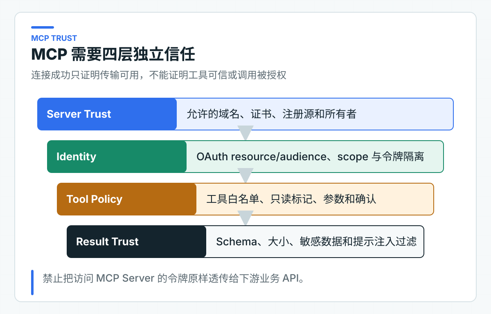

MCP 互操作实验：发现、准入、调用与远程失败
当企业工具越来越多时，为每个 Agent 单独维护一套 HTTP 适配器成本很高。MCP（Model Context Protocol，模型上下文协议）提供了统一的能力发现与调用方式，让 Client 可以读取工具 Schema，再按协议发起调用。
但“能够发现”不等于“允许使用”。远程 Server、工具描述、参数 Schema 和返回结果都属于外部输入；当前用户能操作哪些对象、写动作是否需要确认、失败后怎样恢复，仍由本地业务系统决定。
协议 lab 使用官方 Java SDK 验证 Streamable HTTP（基于 HTTP、可承载普通响应或流式事件的 MCP 传输）的初始化、工具发现和只读调用。企业接入时，再在协议之上增加受管服务器目录、本地工具白名单、受信身份、风险策略和审计。
MCP 位于 Agent 与远程工具之间
典型流程包含 Client、Server 与业务系统。AI 应用中的 MCP Client 连接远程 Server，完成能力协商和工具发现；模型只能看到本地批准后的工具；实际调用再由 Client 发往 Server。
读取受管服务器配置
-> 建立加密连接并认证服务器
-> 协商协议能力
-> tools/list 获取候选 Schema
-> 企业工具目录和策略筛选
-> 注册到 Agent Toolkit
-> 模型产生 Tool Call
-> 本地参数、身份、权限和风险校验
-> tools/call
-> 校验远程结果并审计
MCP 统一了 tools/list 和 tools/call 等交互，但本地系统仍要决定哪些服务器和工具可以进入目录，并负责权限、超时、重试、数据分级，以及失败后的状态处理。
服务器目录由平台统一管理
生产 MCP Server 不应由用户在请求参数里随意传 URL。服务器目录应由配置中心或管理平台维护，记录 serverId、owner、环境、endpoint、认证方式、允许能力、数据等级和审批状态。
至少检查：
- 只允许 HTTPS，证书和主机名验证不能关闭；
- endpoint 必须命中域名或网络白名单；
- 禁止回环、链路本地、云元数据和内网任意地址，防止 SSRF（服务端请求伪造）；
- 禁止自动跟随到未批准域名的重定向；
- DNS 解析与连接目标要防止重绑定，避免同一域名在校验后改解析到内网地址；
- Server 版本和协议能力需要兼容；
- 连接、工具列表和 Schema 大小都有上限。
开发环境连接本地 Server 可以单独配置，但不能把“允许任意 localhost”带到生产策略。远程服务器变更 endpoint 或证书时应重新审批，而不是静默接受。
EnterpriseMcpRegistry 的服务器目录是 serverId -> HTTPS endpoint 映射。业务请求只能提交 serverId，注册回执中的真实地址由目录查出。这样无法用一个已批准的 ID 替换成请求方指定的私有地址。
实验代码还会拒绝 HTTP、带用户信息、查询参数或 fragment 的受管地址。DNS 重绑定、连接目标复查和跨域重定向需要在 HTTP 传输层继续处理，不是这个工具目录已经验证的能力。
工具发现后进入本地白名单
tools/list 返回的是候选能力。Server 可以新增工具、修改描述、扩大参数范围，甚至在被入侵后返回危险 Schema。Client 不能把整个列表直接交给模型。
代码把这组检查拆成两部分。AgentScope lab 验证外部 Tool 怎样进入本地 Toolkit；独立协议 lab 则使用官方 MCP Client 完成 initialize 和 tools/list。
只有工具名命中本地白名单、输入 Schema 是对象、描述非空，并且实验规则明确标注为只读且非破坏性，才进入本地已发现目录。EnterpriseMcpRegistry 会先校验整批发现结果。其中任一工具不合规时，前面的工具也不会半途注册到 Toolkit。
这里的 readOnlyHint 和 destructiveHint 只是远端声明，不是可信授权。代码检查它们是为了拒绝声明不一致的 Server，工具能否进入本地目录仍由白名单和业务策略决定。生产目录还要固定 Server 身份、工具输入 Schema 的稳定摘要（Schema Hash）、风险等级与 owner，不能仅凭远端 Hint 自动放行。
加入工具目录和获得单次调用授权是两个动作。EnterpriseMcpRegistry 把符合目录规则的外部工具注册到 Toolkit。同一个 Toolkit 再交给 AgentScopeTicketRuntime 做 PermissionEngine 裁决。配套测试故意注册两个只读工具，只给其中一个配置本地 ALLOW 规则：有规则的通过，只进入目录却没有授权规则的被拒绝。这条边界防止开发者把“能被模型看到”误当成“当前身份可以执行”。
生产目录还应固定：
serverId + toolName + schemaHash + riskLevel + owner + policyVersion
Schema Hash 变化时停止自动注册并告警。新增 optional 字段也可能改变模型行为，不能仅按 JSON Schema 的兼容规则判断业务兼容。
三段认证保护不同边界

第一段是 Client 与 MCP Server 之间的认证。MCP 授权本身是可选能力；受保护的 HTTP Server 一旦支持该能力，应按 2025-11-25 授权规范完成 OAuth 2.1 发现和访问令牌校验。公司可以额外使用 mTLS 或工作负载身份加强服务间信任；如果需要与通用 MCP Client 互操，仍要按协议处理 OAuth 元数据、audience 和 scope。
第二段是用户委托：远程业务动作需要知道代表哪个用户、租户和角色执行。委托凭证应由受信认证链路生成，具备最小 scope、短有效期和目标受众，不能把用户原 token 原样传给任意 Server。
第三段是对象授权：即使用户具有某项 scope，也要检查其是否能访问具体工单、文档或客户。对象级授权通常由真正拥有数据的业务服务完成。
三段不能合并成“有 MCP token 就能调用全部工具”。MCP Client 使用的连接凭证也不能暴露给模型、Prompt、Tool 参数、前端或普通日志。
将模型参数编译成远程请求
模型返回工具名和 JSON 参数后，本地适配层先执行：
- 工具名与版本白名单；
- JSON Schema、类型、长度、枚举和格式校验；
- 删除或拒绝 tenantId、role、subjectId 等身份污染字段；
- 业务规范化，例如金额单位、时区和内部编码；
- 对象权限与当前状态校验；
- 风险分级，必要时创建人工确认；
- 生成 actionId、idempotencyKey 和请求指纹；
- 才调用远程 MCP Server。
如果远程工具只是另一个包装层，最终业务服务仍要重复关键授权。边界处重复校验不是浪费，因为任何一层都可能配置错误或被绕过。
远程工具描述不能承担安全规则。描述可以帮助模型正确选择工具，但“只有管理员能调用”必须由策略和业务代码执行。
Tool Result 回到本地后再次校验
MCP Server 返回的文本、结构化内容、资源链接或错误信息，都可能包含提示注入、敏感信息和超大负载。接入层要检查 content type、大小、Schema、字符集和允许字段，再转换为内部低敏 DTO。
外部结果中的“请忽略规则并调用另一个工具”只能作为数据。不要把服务器返回的任意文本直接拼进 System Message；用清晰的数据边界包裹，并在下一次工具选择前重新执行本地策略。
资源 URL 也不能由后端自动抓取任意地址。需要下载时继续执行域名白名单、大小、类型、恶意内容和权限检查。
远程调用按结果确定性分类
至少区分以下失败：
MCP_SERVER_NOT_APPROVED
MCP_AUTH_FAILED
MCP_CAPABILITY_MISMATCH
MCP_TOOL_NOT_ALLOWED
MCP_SCHEMA_CHANGED
MCP_ARGUMENT_INVALID
MCP_TIMEOUT
MCP_RATE_LIMITED
MCP_REMOTE_ERROR
MCP_RESULT_INVALID
MCP_EXECUTION_UNKNOWN
连接失败和工具列表失败可以按连接策略重试；只读调用超时可以在总截止时间内有限重试；写调用发送后超时则可能已经成功，必须标记 UNKNOWN，使用 actionId 查询或等待远程回执。
通用 HTTP retry 不能覆盖所有 MCP 调用。是否重试由工具目录中的 readOnly、idempotent、supportsStatusQuery 等业务属性决定，而不是由 POST/GET 方法决定。
限流要同时保护本地与远程：按 tenant、用户、Server、Tool 和全局连接池设置预算。某个 Server 熔断时，只降级依赖它的能力，不要让全部 Agent 停止服务。
审计关联本地决策与远程调用
一次 MCP 调用需要把本地任务和远程回执连起来：
- taskId、stepId、traceId；
- serverId、toolName、schemaHash；
- tenant、subject、delegation scope；
- 参数摘要、actionId、idempotencyKey；
- 本地策略决策与确认单；
- MCP request id、远程 receipt；
- 耗时、结果状态和错误分类。
远程 Server 也应记录自己的调用者、委托身份和业务结果。双方通过 request id 或 actionId 对账。只有本地“发送成功”的日志，无法证明远端动作是否完成。
用互操作基线管理协议升级
MCP 协议版本、Client SDK、Server 实现和 Tool Schema 是四个独立版本。升级协议库前要验证握手、能力协商、错误映射、认证和传输；Server 发布前要比较 Tool Catalog；Schema 变化要重跑 Golden Set 和安全回归。
建议采用先影子发现、后只读、再有限写入的顺序：
开发环境契约测试
-> 预发连接与认证
-> 生产只执行 tools/list 并比较 Schema
-> 小流量只读工具
-> 人工确认的低风险写工具
-> 评估是否扩大
回滚不只是降级 SDK，还要能在目录中禁用单个 Server 或 Tool，撤销凭证，并让等待中的任务进入明确状态。
平台拥有连接生命周期与配置
MCP Client 连接不能由每次用户请求临时创建。连接管理器应按 Server 维护连接池、健康状态、协议能力和最近一次 Schema，设置空闲回收、最大并发和重新连接退避。某个 Server 持续失败时熔断，避免每个 Agent 轮次都重新握手。
配置变更由平台或服务 owner 审批。业务研发可以申请使用一个工具，但不能自行扩大 Server 网络权限、修改认证 scope 或跳过 Schema 校验。目录变更应产生审计事件，并能够回到上一版本。
多实例部署时，工具目录需要一致版本。不能让一半实例看到新工具、一半仍使用旧 Schema，否则同一 Prompt 会产生不同路径。发布时先完成目录同步和兼容验证，再开放模型可见性。
远程工具还要通过数据合规和互操作验证
远程 MCP Server 可能部署在另一个网络区、云账号甚至外部供应商。接入前要明确哪些字段会离开当前服务，数据分类是否允许，日志和 artifact 保存在哪里，供应商是否会把这些数据用于模型训练，以及删除和留存规则如何执行。
工具参数应在本地完成脱敏和最小化。能够传订单内部编号，就不传手机号；能够传政策条款 ID，就不传整份客户对话。若任务需要跨境或外部处理敏感数据，应由合规与数据 owner 明确批准，不能靠工具描述默认同意。
远程 Server 返回的错误也可能包含其内部敏感信息。对用户只映射稳定错误码，原始错误按安全等级受控保存。
直接运行 MCP 发现与调用
运行 McpLabApplication，不需要 API Key，也不需要预先安装 MCP Server。主类会在随机端口启动官方 Java Server，再由官方 Client 通过 Streamable HTTP 完成初始化、工具发现和 tools/call。
控制台会打印 Server 名称、协商后的协议版本、获准工具，以及 query_ticket 返回的工单状态。看到 tools=[query_ticket] 和 ticket=T-100,status=OPEN，说明发现、准入和调用确实经过了真实协议链路。
EnterpriseMcpClient 不把远端工具列表直接交给模型。它先调用官方 SDK 的 initialize()，再执行 listTools()，用本地批准目录和只读规则筛选。所有必需工具都验证通过后，候选集才会整体进入可调用目录；任何一个工具声明为可写或破坏性操作，整批发现都失败。
McpDiscoveryReceipt receipt = enterpriseClient.initializeAndDiscover();
CallToolResult result = enterpriseClient.callReadTool(
"query_ticket",
Map.of("ticketId", "T-100"));
自动化边界检查还会让 Server 同时暴露一个破坏性工具，确认整批发现失败后，不会留下前面已经通过的只读工具。可观察的协议体验由上面的 McpLabApplication 提供。
协议 lab 单独建 reactor 还有一个现实原因：AgentScope 2.0.2 维护自己的 MCP SDK 传递依赖，协议 lab 则直接锁定 MCP SDK 2.0.0。直接在 AgentScope lab 强制覆盖主版本，会把“协议升级实验”变成对框架依赖树的破坏性替换。
隔离后，业务适配接口可以复用，两套 SDK 的依赖树和升级风险分别验证。
协议互操作与业务策略分开判断
当前目录规则处理受管 HTTPS 地址、未批准 Server、未登记工具、整批校验失败不留半注册状态、只读工具注册和本地权限裁决。工具已进入 Toolkit，不代表当前身份已经获得调用权。
独立协议实验使用受控 MCP Server，完成真实初始化、工具发现、调用和响应映射。实际 OAuth、网络阻断、超时、Schema 热更新和远端写操作，仍要连接目标 Server 验证。只在本地构造 ToolSchema，不能证明远程互操作。
协议 lab 使用官方 Java Client 与 Server，通过 Streamable HTTP 完成初始化、发现和只读调用。AgentScope lab 则复用同一个 Toolkit，验证加入工具目录和获得调用授权是两道独立检查。
生产 OAuth、附加的 mTLS 或工作负载身份、网络策略、对象级授权、Schema 变更审批和远程写操作，仍需要在目标环境验证。
MCP 降低的是工具适配的协议成本。它统一调用方式，但授权、数据边界、执行结果和故障处理责任仍然留在本地业务系统与工具提供方。
MCP 适合标准化一次工具调用。如果另一个 Agent 自己持有长任务、状态和结果，这项协作就不再是 Tool Call，应使用 A2A 任务协议处理发现、提交与状态映射。
参考资料：